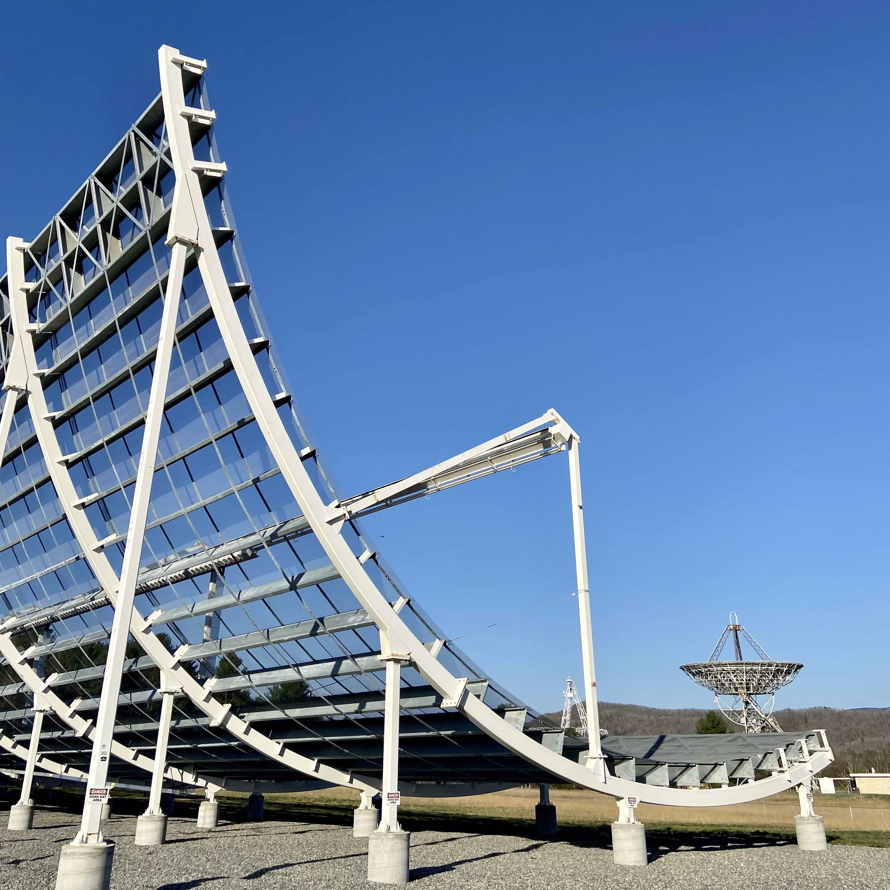

Galería
Telescopios y experiencia de nuestro grupo
Nuestros integrantes tienen experiencia en instrumentación astronómica y operaciones relacionadas desde el primer día. En esta galería de fotografías (todas tomadas por miembros de AstroLab) mostramos algunos de los lugares donde los miembros del equipo han trabajado, colaborado o estado en los últimos años. Estos sitios están en Chile y en el extranjero, e incluyen longitudes de onda de radio largas, longitudes de onda de milímetros, telescopios ópticos y pruebas de sitio con instrumentos.CHIME/FRB Outrigger en el observatorio Green Bank
 Outrigger es un telescopio cilíndrico similar a CHIME (pero un poco más pequeño), con una inclinación (rotación del cilíndro) y apuntando hacia la misma porción del cielo que ve CHIME (apuntando hacie el cenit de CHIME). El outrigger es un cilindro de 20 m de diámetro con 256 receptores de doble polarización y un ancho de banda de 400--800 MHz. Nuestro equipo colabora directamente con el equipo de CHIME/FRB, con énfasis particular en algoritmos de correlación para detectar las fuentes llamadas ráfagas de radio rápidas o FRBs (de su sigla en inglés fast radio bursts) usando el método de interferometría a escalas continentales (en inglés very long baseline interferometry; VLBI). Este tipo de observaciones son fundamentales para entender el origen cósmico de estos eventos de duración milisegundos. Además, su observación en interferometría a escalas continentales es muy compleja, su posición en el cielo y duración hacen que observarlos simultáneamente con dos o más radiotelescopios sea un desafío técnico e instrumental. El equipo de CHIME/FRB ya ha podido correlacionar y localizar eventos de una sola ráfaga de FRB (Cassanelli, Leung, & Sanghavi et al. 2023) y pronto encontrará miles de FRBs y así localizarlos.